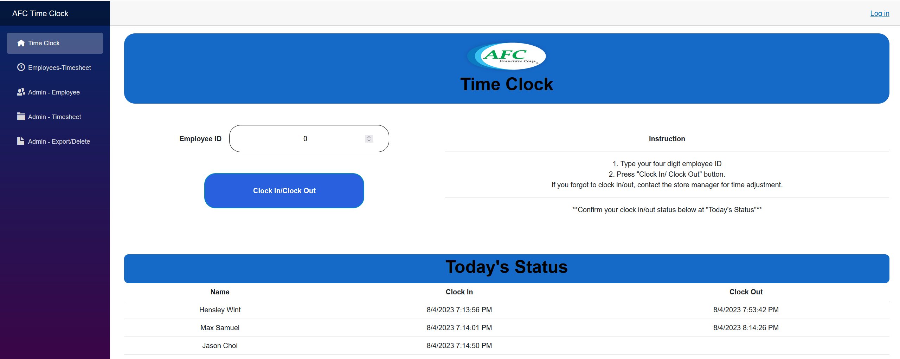
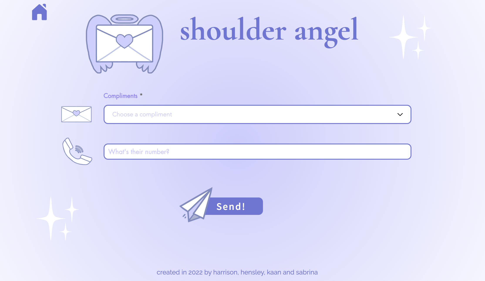

Projects
Auction Web Application, .NET Core 7, MVC, January 2023 - March 2023
A full stack web application
- Utilized C# .NET model-view-controller (MVC) to create full stack auction web application.
- Leveraged MySQL and Entity Framework to create a database for web application.
- Developed CRUD operations for web application resulting in the ability to
modify web application data and have these changes reflected in the MySQL database.
Clock In/Out Web Application, .NET Core 6, Blazor framework, March 2022 - June 2022

A worked as developer in a team to create clock in/out application for a local business.
- Utilized object-oriented programing and async C# functions to create employee and timecard objects, resulting in program managing employee personal records and time records.
- Developed function for clock-in and out button that enabled updating of timecard SQL records.
- Utilized HTML, CSS, C# to create front-end UX/UI clock in/out functionality.
- Deployed program to azure SQL database resulting in persistent data storage.
- Project resulted in business having fully functional automated clock in/out system, which provided business with better record keeping abilities and easier clocking in/out method for employees.
Wix by Velo Website, October 2022

A Wix by Velo website developed using Wix website builder, JavaScript, and Twilio API
- Utilized JavaScript to implement Twilio’s API resulting the website functionality that allow users to send SMS messages via the Twilio API
- The website was developed during University of Washington’s dub hacks hackathon and won the WIX category at the event.
Unity3D Vuforia AR demo, July 2022
AR 3D demo demonstrating AR shopping
- Participated in company organized intern hackathon event lasting 24 hours.
- Implemented Vuforia AR software to track 2D logos resulting in AR interactive 3D models.
- Parented with 2 randomly assigned interns to create a interactive product technology pitch for the company.
Cisco Networking Project, September 2021 - December 2022
Implemented a simulated LAN consisting of routers, switches, and hosts.
- The project included subnetting, configuring CISCO network devices (host, switches, routers), and testing for end-to-end connectivity by ping router default gateway, switch VLAN, and hosts.
Crime Data Heat Map, Python, February 2020
A program to send alerts when a route on the map enters a high-crime area
- Leveraged python, sorting algorithms, and crime data creating crime heat map over google maps resulting in overlaying crime data over the city of Everett.
- Integrated alert system into Python code resulting in notifying users when they entered high-crime areas.